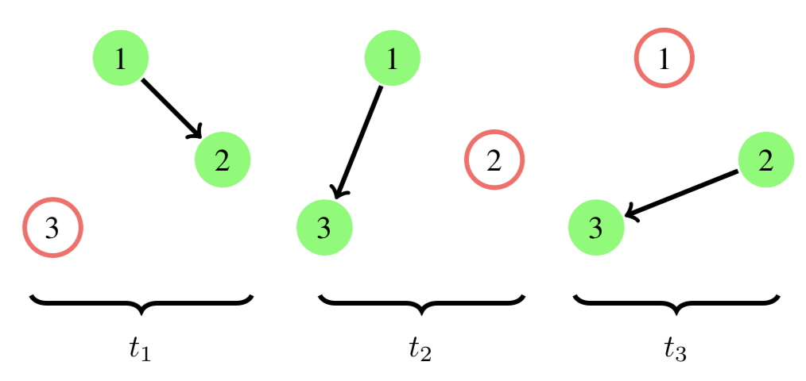

EvolvingGraphs: working with time-dependent networks in Julia
Installation
Install Julia v0.6.0 or later, if you haven't already.
julia> Pkg.add("EvolvingGraphs")Get Started
We model a time-dependent network, a.k.a an evolving graph, as a ordered sequence of static graphs such that each static graph represents the interaction between nodes at a specific time stamp. The figure below shows an evolving graph with 3 timestamps.

Using EvolvingGraphs, we could simply construct this graph by using the function add_bunch_of_edges!, which adds a list of edges all together.
julia> using EvolvingGraphs
julia> g = EvolvingGraph()
Directed EvolvingGraph 0 nodes, 0 static edges, 0 timestamps
julia> add_bunch_of_edges!(g, [(1,2,1),(1,3,2),(2,3,3)])
Directed EvolvingGraph 3 nodes, 3 static edges, 3 timestamps
julia> edges(g)
3-element Array{EvolvingGraphs.WeightedTimeEdge{EvolvingGraphs.Node{Int64},Int64,Float64},1}:
Node(1)-1.0->Node(2) at time 1
Node(1)-1.0->Node(3) at time 2
Node(2)-1.0->Node(3) at time 3Index
EvolvingGraphs.AbstractEdgeEvolvingGraphs.AbstractEvolvingGraphEvolvingGraphs.AbstractGraphEvolvingGraphs.AbstractNodeEvolvingGraphs.AbstractPathEvolvingGraphs.AbstractStaticGraphEvolvingGraphs.AttributeNodeEvolvingGraphs.DiGraphEvolvingGraphs.EdgeEvolvingGraphs.EvolvingGraphEvolvingGraphs.IntAdjacencyListEvolvingGraphs.MatrixListEvolvingGraphs.NodeEvolvingGraphs.TemporalPathEvolvingGraphs.TimeEdgeEvolvingGraphs.TimeNodeEvolvingGraphs.WeightedTimeEdgeBase.issortedEvolvingGraphs.Centrality.katzEvolvingGraphs.active_nodesEvolvingGraphs.add_bunch_of_edges!EvolvingGraphs.add_edge!EvolvingGraphs.add_graph!EvolvingGraphs.add_node!EvolvingGraphs.adjacency_matrixEvolvingGraphs.aggregate_graphEvolvingGraphs.backward_neighborsEvolvingGraphs.breadth_first_implEvolvingGraphs.depth_first_implEvolvingGraphs.edge_reverseEvolvingGraphs.edge_timestampEvolvingGraphs.edge_weightEvolvingGraphs.edgesEvolvingGraphs.evolving_graph_from_arraysEvolvingGraphs.evolving_graph_to_adjEvolvingGraphs.evolving_graph_to_matricesEvolvingGraphs.find_nodeEvolvingGraphs.forward_neighborsEvolvingGraphs.has_nodeEvolvingGraphs.in_degreeEvolvingGraphs.in_edgesEvolvingGraphs.is_directedEvolvingGraphs.matricesEvolvingGraphs.node_attributesEvolvingGraphs.node_indexEvolvingGraphs.node_keyEvolvingGraphs.node_timestampEvolvingGraphs.nodesEvolvingGraphs.num_active_nodesEvolvingGraphs.num_edgesEvolvingGraphs.num_matricesEvolvingGraphs.num_nodesEvolvingGraphs.num_timestampsEvolvingGraphs.out_degreeEvolvingGraphs.out_edgesEvolvingGraphs.random_evolving_graphEvolvingGraphs.random_graphEvolvingGraphs.slice_timestampsEvolvingGraphs.slice_timestamps!EvolvingGraphs.sort_timestampsEvolvingGraphs.sort_timestamps!EvolvingGraphs.sourceEvolvingGraphs.sparse_adjacency_matrixEvolvingGraphs.targetEvolvingGraphs.timestampsEvolvingGraphs.unique_timestamps